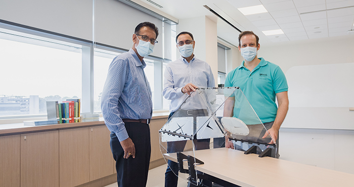
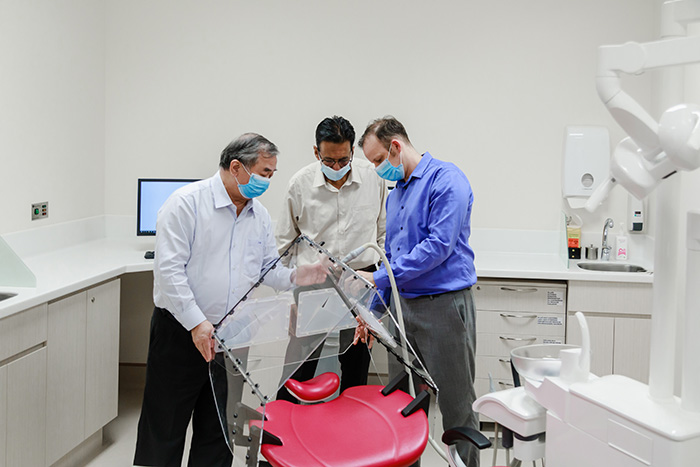
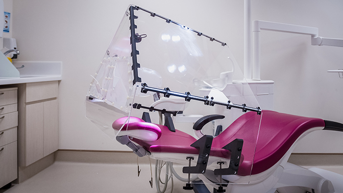
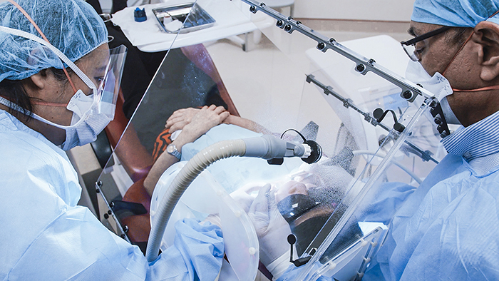

Dental DART: a foldable tent for safer dental care during the pandemic
NUS researchers — including A/P Rosa — invented the Dental Droplet and Aerosol Reducing Tent, a portable chairside shield that contains the saliva and aerosols generated during dental procedures.

Dental treatments are carried out very close to the patient's mouth and nose, and many procedures generate aerosols while clinicians handle saliva and blood. That places dentists among the workers at highest risk of exposure to COVID-19 — and to other agents that can cause influenza, hepatitis, pneumonitis, and eye or skin infections during routine care.
In response, researchers at the National University of Singapore (NUS) invented a portable, tent-like shield that is placed around the patient's head to act as a barrier protecting dentists, nurses and patients from direct and indirect exposure. By containing droplets and aerosols, the Dental DART also limits their spread onto surrounding surfaces, reducing pathogen availability and cross-contamination. It is an adaptation of an earlier NUS device, DART, created to protect healthcare workers during droplet- and aerosol-generating procedures such as intubation and extubation.

The Dental DART is a clear tented shield 64 cm high with a 54 cm base, and its width adjusts between 60 and 70 cm to fit different dental chairs. Three access ports let the dentist and nurse reach in and work safely. The tent connects to the vacuum pumps already built into the chair, drawing contaminated air into the scavenging system and reducing the material that reaches the clinicians' hands, arms and instruments. The team needed three months to reach the final model, designing universal hinges so it suits any chair and engineering it to fold flat.
No increase in viable bacteria with the Dental DART — versus a 14-fold rise without it.

The shield was tested in a clinical setting by measuring bacterial content on the dental-chair light and on the dentist's face shield, before and after scaling — a procedure known to sharply increase airborne contamination. With the Dental DART, there was no increase in viable bacteria on those surfaces; without it, contamination rose roughly fourteenfold.

Dentistry is an essential service that was hit hard by the pandemic, with many providers in Singapore suspending aerosol-generating procedures and leaving patients without care. By making the clinic safer, the device also helps ease the anxiety the pandemic placed on patients and staff. The four NUS inventors filed a patent for the design and are seeking healthcare and industry partners to bring it to dentists in Singapore and worldwide.